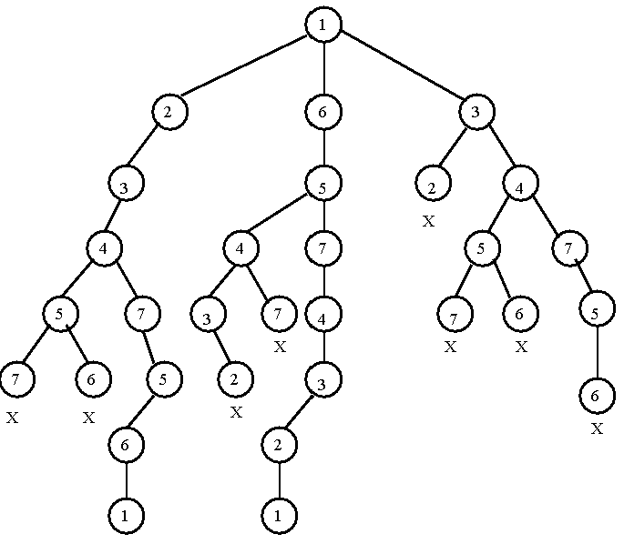

Before any tree-drawing, here are the four ideas this lesson rests on — assume you have never met them.開始畫樹之前，先把這一課要用到的四個概念講清楚 — 就當你完全沒聽過。
Backtracking. A way to search for a solution by building a candidate one piece at a time. Picture the choices as a tree: the root has chosen nothing, and each step down adds one more decision. You walk down a branch, and the moment a partial choice can no longer lead to a valid solution you abandon that branch — retreat back up and try the next option. That retreat is the "backtrack." It saves you from finishing candidates you already know are doomed.Backtracking。一種找解的方法，重點是一塊一塊地把候選解拼出來。你可以把所有選擇想成一棵樹：root 什麼都還沒選，每往下走一步就多做一個決定。你沿著一條分支往下鑽，只要發現現在這個半成品再也不可能變成合法解，就馬上放棄這條分支，退回上一層換下一個選項試。這個退回就是所謂的「backtrack（回溯）」。好處是：早就注定會失敗的候選解，你根本不用把它走完。
The Satisfiability problem (SAT). You are given a Boolean formula — a logic expression whose variables are each either true or false — and asked: is there a way to set the variables that makes the whole formula true? Some vocabulary, defined once and used throughout:Satisfiability 問題（SAT）。給你一個 Boolean formula（邏輯運算式，裡面每個變數不是 true 就是 false），然後問你：有沒有一種變數設法能讓整個 formula 變成真？這裡先把幾個詞講定，後面都會用到：
| Term名詞 | Plain meaning白話講就是 | Example例子 |
|---|---|---|
| literal | a variable, or its negation (NOT)一個變數，或它取反（NOT）後的樣子 | x1 or ¬x1 |
| clause | an OR of literals — true if any one literal in it is true幾個 literal 用 OR 串起來，只要裡面有一個是真，整個 clause 就是真 | x2 ∨ x5 |
| CNF | (conjunctive normal form) an AND of clauses — true only if every clause is true（conjunctive normal form）幾個 clause 用 AND 串起來，要每個 clause 都真，整體才是真 | (x2 ∨ x5) ∧ x3 |
| satisfiable | some assignment of true/false makes the whole formula true找得到一組 true/false 的指派，能讓整個 formula 為真 | see below見下面 |
Tiny example: the CNF formula (x1 ∨ x2) ∧ (¬x1) is satisfiable — set x1 = false, x2 = true and both clauses hold. By contrast (x1) ∧ (¬x1) is unsatisfiable: no value of x1 can make both clauses true at once.舉個小例子：CNF formula (x1 ∨ x2) ∧ (¬x1) 是 satisfiable，只要設 x1 = false, x2 = true，兩個 clause 就都成立。反過來 (x1) ∧ (¬x1) 就 unsatisfiable：x1 不管設什麼，都沒辦法讓兩個 clause 同時為真。
The sum-of-subsets problem. Given a set of numbers and a target, is there a subset whose elements add up to exactly the target? Tiny example: from {3, 5, 8} with target 11, the subset {3, 8} works (3 + 8 = 11); with target 4, no subset hits it.sum-of-subsets 問題。給你一堆數字和一個 target，問你能不能挑出某個 subset，讓裡面的數字加起來剛好等於 target。舉例：從 {3, 5, 8} 找 target 11，挑 {3, 8} 就行（3 + 8 = 11）；但如果 target 是 4，怎麼挑都湊不出來。
The Hamiltonian circuit problem. A Hamiltonian circuit is a cycle in a graph that visits every vertex exactly once and returns to where it started. The question: does a given graph contain one? Do not confuse it with an Euler circuit, which is a cycle that uses every edge exactly once (vertices may be revisited). The classic trap is swapping the two:Hamiltonian circuit 問題。所謂 Hamiltonian circuit，就是圖裡的一個環，每個 vertex 剛好走過一次，最後再回到起點。問題就是：給你一張圖，裡面到底有沒有這種環？這裡很容易跟 Euler circuit 搞混 — Euler circuit 是每條 edge 剛好用一次的環（vertex 可以重複走）。經典的考試陷阱就是把這兩個搞反：
a-b-c-d-a, going round the rim a→b→c→d→a is both — but add a diagonal a-c and the rim is still Hamiltonian (all 4 corners once) yet no longer Euler (the diagonal edge is never used).Hamiltonian = 每個 vertex 走一次。Euler = 每條 edge 走一次。拿一個正方形 a-b-c-d-a 來看，沿外圈走 a→b→c→d→a 兩個都算。但你只要加一條對角線 a-c，外圈還是 Hamiltonian（4 個角各走一次），卻不再是 Euler 了，因為那條對角 edge 根本沒走到。Every problem below becomes a solution tree: the root decides nothing, each level fixes one more choice, each leaf is a full candidate. We walk it depth-first (deepest open node first → a stack, from Lesson 1) and backtrack — pop and retreat — the instant a partial choice can no longer succeed. That early abandon is pruning: skip a whole subtree without examining its leaves.下面每個問題都會變成一棵解答樹：root 什麼都還沒決定，每往下一層就多固定一個選擇，每個 leaf 就是一組完整的候選解。我們用 depth-first 的方式走（永遠先展開最深的那個節點 → 也就是第 1 課的 stack），一旦發現現在的部分選擇不可能成功，就立刻 backtrack，pop 掉退回去。這種提早放棄就叫 pruning（剪枝）：整棵子樹直接跳過，連它底下的 leaf 都不用看。
| Problem問題 | Each level decides…每層在決定… | Prune when…什麼時候剪枝 |
|---|---|---|
| SAT | xi = T or xi = F | a clause is already falsified已經有某個 clause 死掉（被否證） |
| Sum-of-subsets | element i in or out第 i 個元素要不要選 | partial sum exceeds target目前累積的總和已經超過 target |
| Hamiltonian | which vertex to visit next下一步要走到哪個 vertex | vertex reused / no edge / dead endvertex 重複走 / 之間沒有 edge / 走進死路 |
2n-leaf tree tractable: you may never need to examine all 2n assignments.關鍵考點：這些都是 feasibility 問題 — 我們只要一個解（或確定「沒有」），所以 DFS 一碰到第一個 goal leaf 就可以停了。Pruning 就是讓這棵 2n 個 leaf 的樹變得跑得動的關鍵：很多時候你根本不用把全部 2n 種指派都檢查一遍。xi = T; in sum-of-subsets, left is "in" and right is "out"; in Hamiltonian, the children just follow the adjacency order listed for that vertex (left→right). Read each tree's own label key; don't carry a convention over from the previous one.開始之前先提醒一句：「左」分支和「右」分支到底代表什麼，下面每個問題都是各自重新定義的 — 沒有一個全域的「左 = 那個 yes／正面的選擇」這種規則。在 SAT 裡，左是 xi = T；在 sum-of-subsets 裡，左是「選（in）」、右是「不選（out）」；在 Hamiltonian 裡，小孩就照那個 vertex 列出來的 adjacency 順序（由左往右）排。每棵樹看它自己的標籤定義就好，別把前一題的慣例硬套過來。Given a Boolean formula in n variables, there are 2n truth assignments — a complete binary tree of depth n, branching xi = T / xi = F at level i. For n = 3, that is 23 = 8 leaves.一個 Boolean formula 有 n 個變數，就會有 2n 種真值指派 — 畫出來剛好是一棵完整的 depth n 的 binary tree，在第 i 層分成 xi = T 和 xi = F 兩條。n = 3 的話，就是 23 = 8 個 leaf。
The slide instance (clauses that must all hold; ¬ = NOT, ∨ = OR):投影片上的那個 instance（這些 clause 要全部成立；¬ = NOT，∨ = OR）：
Walk the tree and prune the moment any clause is violated. At the very first level we already hit a wall:開始走這棵樹，只要有任何一個 clause 被違反就馬上剪掉。結果第一層我們就直接撞牆了：
Branch x1 = T → clause (1) ¬x1 is falsified → prune that whole subtree.
Branch x1 = F → clause (2) x1 is falsified → prune that subtree too.
Both children of the root die immediately because clauses (1) and (2) directly contradict. So this instance is unsatisfiable — proven by pruning at depth 1, without ever building the other 23 − 2 nodes. That is the whole point: a partial assignment can already reveal a contradiction.走 x1 = T 這條 → clause (1) ¬x1 直接死掉 → 整棵子樹砍掉。
走 x1 = F 這條 → 換成 clause (2) x1 死掉 → 這棵子樹也砍。
root 的兩個小孩都當場掛掉，因為 clause (1) 跟 (2) 根本互相矛盾。所以這個 instance 是 unsatisfiable — 在 depth 1 靠剪枝就證完了，其餘的 23 − 2 個節點根本不用建。這就是整個重點：光看一個部分指派，矛盾就已經露餡了。
S = {7, 5, 1, 2, 10}, target = 9. We fix one model and stick to it: walk the elements in the listed order 7, 5, 1, 2, 10, and at level i make a binary in/out decision for that one element — left child = put it in (add it to the sum), right child = leave it out (sum unchanged). So every node has exactly two children, labelled by what we do with the next element in the list. A stack guides the DFS (push children, pop to backtrack), and we explore the in branch before the out branch. Prune the instant the running sum exceeds 9 (adding more can only make it bigger). Node labels below are the running sum; (x) = pruned (over target).S = {7, 5, 1, 2, 10}，target = 9。這裡只用一種模型、從頭到尾不換：照清單順序 7, 5, 1, 2, 10 一個一個處理，第 i 層就是對那一個元素做「選 / 不選」的 binary 決定 — 左小孩 = 把它選進來（加進總和），右小孩 = 不選（總和不變）。所以每個節點都剛好兩個小孩，分支標的就是「對清單裡下一個元素做什麼」。整個 DFS 由 stack 帶著走（push 小孩，要 backtrack 就 pop），而且一律先走選（in）那條、再走不選（out）那條。只要累積總和一超過 9 就立刻剪掉（再加下去只會更大）。下面每個節點上的數字是當下的累積總和，(x) 代表已經剪掉（爆過 target 了）。
i has already decided elements 1…i; its two children both decide element i+1 (the next one in the list) — left = in, right = out. You never go back to an earlier element. So once you have "passed over" 5 (the 5 out branch), 5 is gone for good on that path; the only elements still up for grabs are the later ones: 1, 2, 10. That is why every element 7, 5, 1, 2, 10 appears exactly once along any root-to-leaf path, and why 10 shows up only deep down (as the level-5 decision), not as a sibling of 5 up top. A branch is cut with (x) the moment its running sum passes 9, e.g. 7+5 = 12 or 8+2 = 10; branches whose sum stays ≤ 9 keep going. One subtlety in the picture: the goal 9 on the right sits under the 7 from the 5 out branch, drawn via in 2 — but that edge silently passes through the 1 out decision first. The diagram compresses the unbranched 1 out step, so the real path to the goal is 7 in → 5 out → 1 out → 2 in (the full trace below spells out that 1 out), giving the subset {7, 2}.決定每個節點有哪些小孩的那條規則：一個在第 i 層的節點，代表元素 1…i 都已經決定完了；它的兩個小孩都是在決定元素 i+1（清單裡的下一個）— 左 = 選、右 = 不選。你永遠不會回頭去動更前面的元素。所以一旦你「跳過」了 5（走 5 out 那條），在這條路徑上 5 就再也碰不到了；還能挑的只剩後面的：1、2、10。這就是為什麼任何一條 root-to-leaf 路徑上，7、5、1、2、10 都剛好各出現一次，也是為什麼 10 只會出現在很深的地方（第 5 層那個決定），而不會跟上面的 5 當兄弟。某條分支的累積總和一超過 9 就標 (x) 砍掉，例如 7+5 = 12 或 8+2 = 10；總和還 ≤ 9 的就繼續往下走。圖裡有個小地方要注意：右邊那個 goal 9 掛在 5 out 分支下來的 7 底下，用 in 2 連過去 — 但這條邊其實偷偷先經過了 1 out 這個決定。圖把沒有分岔的 1 out 那一步省略掉了，所以真正到 goal 的路徑是 7 in → 5 out → 1 out → 2 in（下面完整的 trace 會把這個 1 out 寫出來），湊出來的 subset 就是 {7, 2}。Decide the answer subset yourself before opening it.先自己想想看答案是哪個 subset，再打開來對。
Read the path as a sequence of in/out decisions on 7, 5, 1, 2, 10, always taking in before out:把整條路徑看成對 7, 5, 1, 2, 10 依序做的「選 / 不選」決定，而且永遠先選（in）再不選（out）：
7.7 選 → 總和 7。7+5 = 12 > 9 → prune, pop (this is the FIRST backtrack).5 選 → 7+5 = 12 > 9 → 剪掉、pop（這就是第一次 backtrack）。7. Now decide element 1. 1 in → 8.5 不選 → 總和還是 7。換決定元素 1。1 選 → 8。8: 2 in → 10 (x); 2 out → 8, then 10 in → 18 (x), 10 out → leaf sum 8 ≠ 9 (dead). Backtrack all the way up.在 8 底下：2 選 → 10 (x)；2 不選 → 8，再 10 選 → 18 (x)、10 不選 → leaf 總和 8 ≠ 9（死路）。一路 backtrack 退回去。7. Now 2 in → 7 + 2 = 9 = target → goal node.1 不選 → 總和還是 7。接著 2 選 → 7 + 2 = 9 = target → 找到 goal。Answer subset: {7, 2} (7 in, 5 out, 1 out, 2 in, 10 out). The stack's LIFO order is exactly what makes the search dive in-first down each element, then retreat to the most recent "out" choice.答案 subset 就是 {7, 2}（7 選、5 不選、1 不選、2 選、10 不選）。stack 的 LIFO（後進先出）就是為什麼搜尋會對每個元素先鑽「選」那條到底、再退回最近一次的「不選」分支繼續試。
A Hamiltonian circuit visits every vertex exactly once and returns to the start. Tree: each level chooses the next vertex to visit; a root-to-leaf path of length n that reuses no vertex and closes back to the start is a Hamiltonian circuit (Fig. 6-8). Here n = 7 (this graph has 7 vertices), and "length n" means the path uses n = 7 edges — the 6 hops through the 7 distinct vertices plus the closing edge back to the start. So you read off 8 vertex labels along the path, e.g. 1-2-3-4-7-5-6-1, where the start vertex 1 appears at both ends. The example graph (Fig. 6-6, vertices 1–7) — adjacency you can walk by hand:Hamiltonian circuit 就是把每個 vertex 剛好走過一次，最後回到起點。畫成樹：每一層選下一個要走的 vertex；一條長度 n 的 root-to-leaf 路徑，只要沒有重複用到 vertex，又能繞回起點，那就是一條 Hamiltonian circuit（Fig. 6-8）。這裡 n = 7（這張圖有 7 個 vertex），而「長度 n」指的是這條路徑會用到 n = 7 條 edge — 走過 7 個不同 vertex 的那 6 步，再加上最後繞回起點的那一條 edge。所以沿著路徑讀，你會看到 8 個 vertex 標籤，例如 1-2-3-4-7-5-6-1，起點 1 會在頭尾各出現一次。下面是範例圖（Fig. 6-6，vertex 1–7），你可以照著 adjacency 自己手動走：
Root the search at vertex 1; extend partial paths, mark dead ends X, backtrack on failure (children left→right, in the adjacency order above). Before the full figure, here is a small slice of the tree by hand — one success path and two ways a branch dies — so you can walk it from the prose alone:搜尋從 vertex 1 開始；一路延伸部分路徑，走到死路就標 X，失敗就 backtrack（小孩由左往右、照上面的 adjacency 順序試）。在看完整圖之前，先手動畫一小段樹 — 一條成功路徑加兩種分支死法 — 讓你光看文字也能自己走一遍：
Now the complete picture. This is Fig. 6-8, the full search tree — node labels are the vertices visited, and every doomed branch is marked X:搜尋從 vertex 1 開始；一路延伸部分路徑，走到死路就標 X，失敗就 backtrack（小孩由左往右試）。這張就是 Fig. 6-8，完整的搜尋樹 — 節點上的標籤是已經走過的 vertex，每條注定失敗的分支都標了 X：

Fig. 6-8 — Search tree for a Hamiltonian circuit of the Fig. 6-6 graph. Each path from the root (vertex 1) down chooses the next vertex; branches that reuse a vertex or hit a missing edge dead-end at X; the two branches that reach a leaf 1 close the cycle.Fig. 6-8 — Fig. 6-6 那張圖的 Hamiltonian circuit 搜尋樹。從 root（vertex 1）往下的每條路徑都在挑下一個 vertex；只要某個 vertex 重複走、或要走的 edge 根本不存在，那條分支就會在 X 卡死；而兩條走到 leaf 1 的分支，就成功繞回起點收成環。
Two root-to-leaf paths visit all 7 vertices once and close back to 1 (the two leaf nodes labeled 1 in Fig. 6-8). Written out in full, vertex by vertex (check each consecutive pair against the edge list above):總共有兩條 root-to-leaf 路徑把 7 個 vertex 各走一次又繞回 1（也就是 Fig. 6-8 裡那兩個標 1 的 leaf）。完整一個 vertex 一個 vertex 寫出來（每對相鄰的 vertex 都拿上面的 edge 清單核對一次）：
Both visit each of 1–7 exactly once and return to 1; they are the same cycle traversed in opposite directions (read one backwards and you get the other). Note 5 connects to 6 and 7 but not directly to nothing-useful — that is why the left path goes 4-7-5-6, not 4-5-7-? (vertex 7 touches only 5 and 4, so …5-7 could never reach 6). Every other branch in the tree ends in X — a reused vertex, a missing edge, or a dead end with vertices still unvisited. Because this is feasibility, finding one closing path answers "yes, a Hamiltonian circuit exists." No edge weights appear: Hamiltonicity is feasibility, not optimization.兩條都把 1–7 各走一次再回到 1；它們其實是同一個環，只是方向相反（把其中一條倒著讀就是另一條）。注意 5 只連到 6 跟 7，這就是為什麼左邊那條要走 4-7-5-6，而不是 4-5-7-?（vertex 7 只碰得到 5 跟 4，所以 …5-7 之後根本到不了 6）。樹裡其他每一條分支最後都卡在 X — 不是 vertex 重複，就是 edge 不存在，再不然就是還有 vertex 沒走到就走不下去了。因為這是 feasibility 問題，只要找到一條能繞回來的路徑，就等於回答了「有，這張圖存在 Hamiltonian circuit」。整個過程沒有出現任何 edge weight：Hamiltonicity 是看可不可行，不是在比誰最佳。
Pick before you read the feedback. Getting it wrong then seeing why builds memory better than re-reading.先選好答案再看解說。先答錯、再搞懂為什麼，記得會比一直重看還牢。
Primary source: R.C.T. Lee, S.S. Tseng, R.C. Chang, Y.T. Tsai — Introduction to the Design and Analysis of Algorithms, Ch 6 §§ on the satisfiability, Hamiltonian circuit, and sum-of-subsets problems and depth-first search (your Alg05 slides, "The Searching Strategies"). Re-draw the SAT 2n tree, Fig. 6-8 (Hamiltonian), and Fig. 6-11 (sum-of-subsets DFS) from scratch and prune them by hand.主要來源：R.C.T. Lee, S.S. Tseng, R.C. Chang, Y.T. Tsai — Introduction to the Design and Analysis of Algorithms，第 6 章裡講 satisfiability、Hamiltonian circuit、sum-of-subsets 跟 depth-first search 的那幾節（就是你的 Alg05 投影片，「The Searching Strategies」）。建議把 SAT 的 2n 樹、Fig. 6-8（Hamiltonian）、Fig. 6-11（sum-of-subsets DFS）整個從頭自己重畫一次，再親手剪枝練一遍。
See also the Glossary → Ch6 and the full chapter note for the verified figures and edge lists.也可以翻 Glossary → Ch6 跟完整的章節筆記，那裡有核對過的圖跟 edge 清單。
O(n) selection.下一課 — 第 5 課：Prune-and-Search — 用 median of medians 做 linear-time selection。這次我們不畫 feasibility 樹了，改成直接把 input 本身縮小：挑一個夠好的 pivot，讓每一輪都能砍掉固定比例的元素，最後做到最壞情況也只要 O(n) 的 selection。📣 I'm your teacher — ask me anything. Want the full Fig. 6-8 tree with every X explained? A bigger sum-of-subsets instance to trace? The BFS (queue) version of the same tree? Just say so.📣 我是你的老師 — 有問題儘管問。想看完整的 Fig. 6-8 樹、把每個 X 都講清楚嗎？想換一個更大的 sum-of-subsets instance 來練追蹤嗎？還是想看同一棵樹改用 BFS（queue）會怎麼走？跟我說一聲就好。
Score this lesson out of 5 to yourself. 4–5 → we move to Lesson 5. ≤3 → tell me which question and we drill it.給自己這一課打個分數（滿分 5）。4–5 分 → 我們直接進第 5 課。3 分以下 → 跟我說是哪一題，我們針對它加強練。